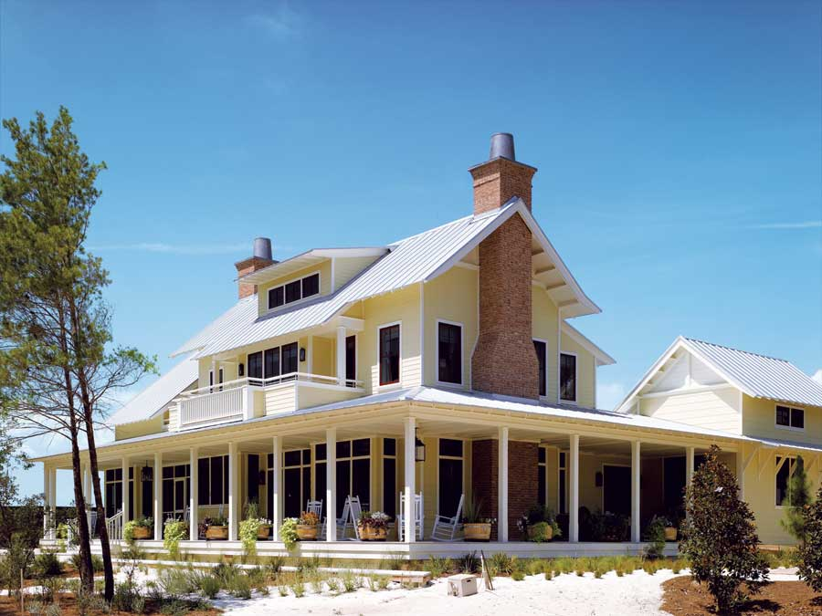

Install Fiber-Cement Siding: Don’T Paint Your House For 25 Years!
Fiber-cement siding costs less and lasts longer than many siding options.
By Dan Chiras
June/July 2009
If you’re building a new home, garage, addition, workshop or barn - or if it’s time to replace the ancient, weather-beaten siding on your house - consider fiber-cement siding.
What is fiber-cement siding, and what are your options? Like conventional siding, fiber-cement siding is applied to the exterior of buildings to protect them from the elements. This product comes in a wide range of colors and styles that resemble conventional siding materials, notably stucco, cedar shingles and wood clapboards. It’s made primarily from cement, sand and wood fiber (often a recycled wood-fiber waste product), a combination that results in an extremely durable material.
Fiber-cement siding typically costs a bit more than vinyl siding, but less than stucco (see “What Will it Cost?” below). It also outlasts its competitors - often by decades - because it resists many common hazards, including fire, wind, insects and rain. Fiber-cement siding is recommended in all climates, but is ideal for hot, humid regions. No matter how wet it gets, it won’t rot. And because of the cement and sand content, it’s termite-resistant.
Because of its durability, fiber-cement siding reduces maintenance costs, and it’s less likely than conventional siding to end up in landfills. Unfortunately, there are currently no recycling programs in place for fiber-cement siding. However, it is an inert material that, if ultimately sent to a landfill, should not endanger the environment.
Although many builders and homeowners are just discovering the benefits of fiber-cement siding, this material has been around for quite some time - nearly 100 years - so you won’t be experimenting with a new product.
Fiber-cement planks made with a wood-grained or a smooth finish are popular. These come in widths of 4 to 12 inches, so you can match existing siding if you’re building an addition or garage. Fiber-cement siding also comes in wall panels with vertical grooves and soffit panels for the underside of overhangs.
Fiber-cement siding can be primed and painted at the factory or on the building site. (Some manufacturers prime all of their products.) I recommend factory-primed and painted siding, which often carries a warranty of up to 25 years. For those who want to do the priming and painting themselves, manufacturers typically recommend an alkaline-resistant primer and a 100-percent-acrylic top coat.
If you want to change the color at a later date, no problem. Water-based acrylic paints adhere well. And fiber-cement siding does not expand and contract as much as wood siding, so paint stays in place better. It rarely peels or blisters, reducing maintenance time and cost.
Fiber-cement siding is widely available and can be purchased at home improvement centers and lumberyards. Perhaps the best-known manufacturer is James Hardie, which offers three products: HardiePlank, HardieShingle and HardiePanel. Other manufacturers include CertainTeed, Cemplank and Maxitile. CertainTeed produces products in 16 color choices.
Installation
Before installing new fiber-cement siding, you’ll probably need to remove all the old siding - a time-consuming, demanding job. You’ll also need to rent a dumpster to haul the waste away. You may be able to recycle old siding or burn it in a woodstove if it’s not painted or treated with chemical preservatives or lead paint.
Applying new siding is relatively simple as long as you have basic construction skills, time and patience. You’ll also need a few tools: a circular saw or chop saw, cordless drill or hammer, sawhorses, ladder, dust mask, eye protection, level, straight edge, chalk line and a bevel gauge for marking siding for gable ends.
If you don’t have the necessary skills, hire a professional. A good contractor will do the job right and in a fraction of the time it would take a do-it-yourselfer. For those who want to take on this project, start by reading the manufacturer’s instructions and follow them closely. Manufacturers such as James Hardie offer detailed information on their websites. If the siding is installed incorrectly, you may end up creating costly problems and voiding the warranty.
Like conventional wood siding, fiber-cement siding can be applied to both wood and steel studs, but it’s normally attached to exterior wall sheathing (oriented strand board or plywood) on top of an appropriate weather-resistant barrier, such as Tyvek (see “Weather-resistant Barrier Materials,” below). Some fiber-cement products can be applied over rigid foam insulation. You’ll need to install vertical wood furring strips to which the siding will be attached before installing the siding over concrete or concrete block walls. Check the manufacturer’s recommendations for spacing of the furring strips.
Fiber-cement is attached using corrosion-resistant galvanized or stainless steel nails or screws that penetrate studs or exterior sheathing. Many fiber-cement siding planks can be blind-nailed onto exterior sheathing so that no nails show (an advantage over traditional wood clapboards). To do this, each plank is nailed about 1 inch down from the top edge. The next plank is placed so that it overlaps the nails, hiding them from view. Follow the manufacturer’s instructions carefully, as there are some restrictions on blind-nailing wider planks to prevent wind uplift. (Wind can lift wider planks if they’re only attached at the top.)
Fiber-cement siding also can be face-nailed, which leaves exposed nail heads. But staples cannot be used because of the hardness of the material. Do not under-drive nails or screws.
Whatever system you choose, check the manufacturer’s recommendations for placement of fasteners (nails or screws) in relation to the ends and top edge of the plank. Consult wind tables provided by manufacturers for recommendations on fastener spacing, stud spacing and other factors for your area.
What to Watch Out For
Use a circular saw with a special blade that minimizes dust when cutting fiber-cement siding, such as Hitachi’s Hardiblade or Dewalt’s PCD Fiber-Cement Blade. You also may be able to cut these products with snapper shears or a guillotine-type cutter.
Cut these materials outdoors, in an area away from other people and pets. Anyone in the area should wear a dust mask whenever planks or other fiber-cement materials are being cut or sawn.
When applying new fiber-cement siding, consider installing additional insulation in the wall cavity or over the exterior sheathing. If you add rigid insulation over the exterior sheathing, you’ll have to build out the window and door trim as well.
Check local building codes to determine whether you need a permit to install new siding - and to be sure the job, as planned, meets the requirements. Local building codes may exempt fiber-cement siding from the usual requirement of a water-resistant layer between exterior sheathing and the siding, but it’s a good idea to install building paper. See “Weather-resistant Barrier Materials,” below, for some environmentally friendly options.
Weather-resistant Barrier Materials
A good house wrap underneath siding is an important component in green building because it “breathes,” allowing moisture vapor to escape to the outside. This prevents mold, which can cause health problems and damage to your home. In addition to Tyvek, check out Home Slicker by Benjamin Obdyke, Delta Reflex from Cosella Dorken Products, and Construction Film by Gempack (800-328-4556).
What Will it Cost?
Fiber-cement is more expensive than vinyl, but similar in price to wood - if you’re considering only the cost of materials. Fiber-cement products tend to be more costly to install because they require removal of the existing siding and more preparation. (Vinyl siding can often be placed over existing siding.) Cost is determined by several factors, such as whether the siding is pre-finished or painted on-site, the style of paint, type of siding and the size of your house.
Cost estimate per square foot to remove existing clapboard siding and install fiber-cement siding:
Cost for materials only: $2.50
Contractor’s total per square foot, including materials, labor and markup: $9.00
Includes house wrap, insulation board, and painting and priming the new siding. Costs are national averages and do not include sales tax.
Cost of alternate materials per square foot installed (does not include removal of existing clapboard siding):
Brick veneer: $18.00
Cedar clapboards: $8.00
White cedar shingles: $6.25
Vinyl: $6.50
What Will You Save?
Fiber-cement siding typically comes with an impressive (and transferable) warranty of up to 50 years. Less-frequent painting (every 15 to 25 years, versus every three to five years for conventional wood plank siding) means fiber-cement siding could save you a considerable amount over its lifetime.
In terms of return on investment, Remodeling magazine’s 2007 annual “Cost Versus Value” report rated new fiber-cement siding as one of the highest-value projects, with an average return of 88 cents on each dollar invested if homes were sold.
Go Green!
When working on any home improvement project, plan what you are going to do, and make a complete list of materials and supplies you’ll need. This will save extra trips to the hardware store or home improvement center to buy or return materials, saving you time and reducing gas use and wear-and-tear on your vehicle.
Dan Chiras teaches workshops on renewable energy and green building through The Evergreen Institute.
 KEITH WARD Safety first! When sawing fiber-cement siding, be sure to wear a dust mask and eye protection. And protecting your ears from the noise produced by power tools is always a good idea. |
 CERTAINTEED CORPORATION Fiber-cement siding is a great option for new construction. Made of cement, sand and wood fibers, it resists fire, wind, insects (including termites) and moisture. |
JAMES HARDIE You’ll need to install vertical wood furring strips to which the siding will be attached before installing the siding over concrete or concrete block walls. |
|
JAMES HARDIE Fiber-cement siding is manufactured to resemble cedar shingles and wood clapboards (either wood-grain or smooth). You also can purchase fiber-cement siding that looks like stucco. |
JAMES HARDIE Fiber-cement siding is manufactured to resemble cedar shingles and wood clapboards (either wood-grain or smooth). |
|